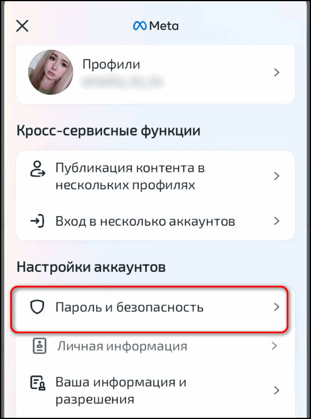
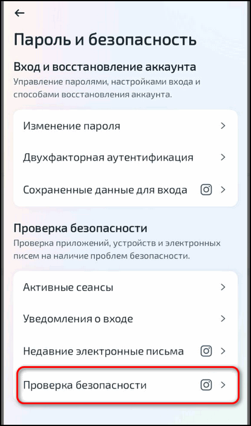
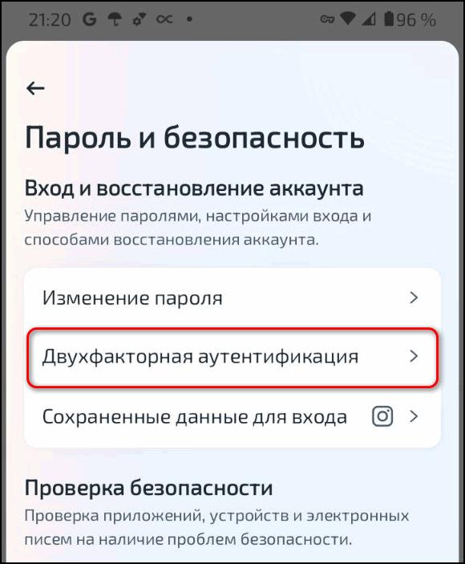
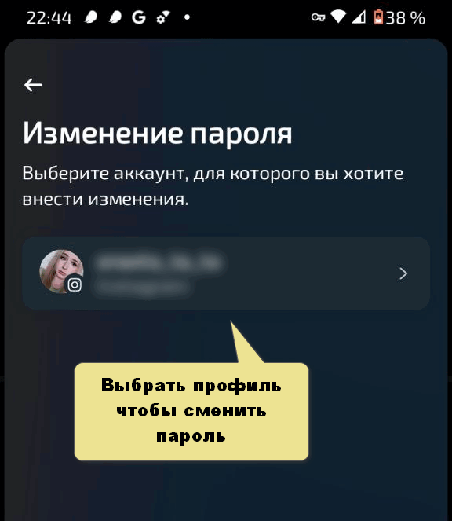
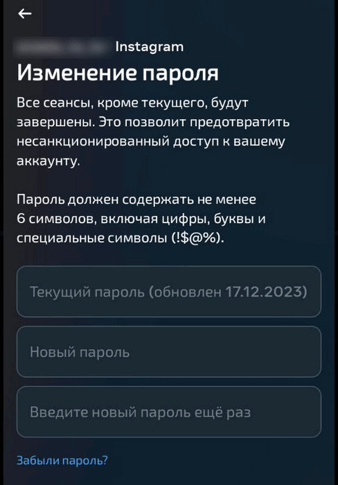
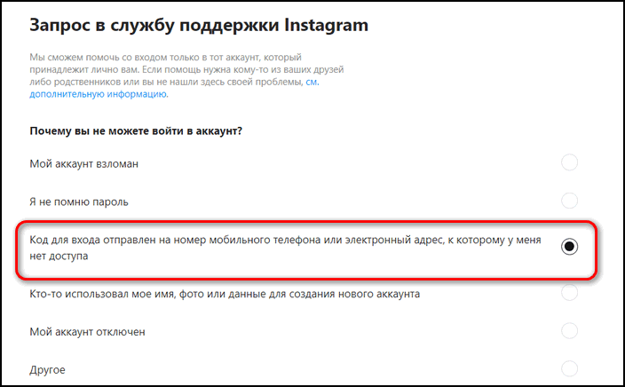
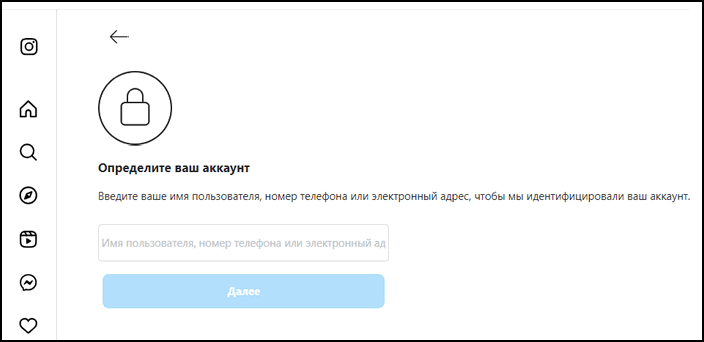

Как поменять пароль в Инстаграме: через поддержку и самому

Ситуаций, когда нужно сменить пароль в Инстаграме* может быть несколько: забыл пароль, взломали страницу или владелец беспокоится о безопасности своих данных. По советам интернет-экспертов, менять пароль во всех социальных сетях и мессенджерах нужно не реже раз в 3 месяца.
Зачем менять пароль в Инстаграме*
Как и в любой социальной сети, где пользователь ведет переписку, в Инстаграме* хранится персональная информация. Это значит, что при взломе этими данными могут воспользоваться злоумышленники или другие заинтересованные третьи лица. Регулярное обновление пароля и установка дополнительных мер защиты поможет минимизировать проблему. Ваш закрытый профиль можно будет посмотреть только через сервисы. Кроме установки постоянного кода для входа, социальная сеть предлагает:
- двухфакторную аутентификацию. Пользователь получает дополнительный пароль, который генерируется раз в 10 минут;
- привязать страницу к Facebook*. Если есть учетная запись, то стоит её подключить.
Инстаграм* предлагает функцию: «Проверка безопасности», которая показывает какие есть недостатки в защите профиля. Чтобы проверить свою страницу:
- Зайти в Инстаграм* - Настройки и конфиденциальность.
- Центр аккаунтов – Безопасность.

- Проверка – посмотреть рядом с какими пунктами стоит красная точка.

Пункты, где рядом находится красная точка – брешь в защите профиля. С ними нужно работать: изменить пароль на более сложный, подтвердить адресу электронной почты и номер телефона.
Защита страницы: правила выбора пароля
Обновляя пароль в Инстаграме*, владелец страницы должен предварительно придумать новый. В качестве комбинации для защиты аккаунта не рекомендуется использовать:
- даты рождения, имена или фамилии близких или свою;
- пароли от других социальных сетей, мессенджеров;
- номер банковской карты;
- без разного регистра, специальных символов.
Зачастую владельцы теряют страницы, если у тех установлен пароль такой же, как и в других соц.сетях. И выбрав жертву, злоумышленникам не нужно стараться над поиском уникальных данных от разных страниц. При выборе пароля можно воспользоваться генераторами, а если добавлять новые данные через браузер, то тот поможет с выбором комбинации.
Двухфакторная аутентификация
Это дополнительный способ защиты аккаунта, который работает по принципу двух паролей. Подключив такую функцию, владелец профиля станет получать второй код для авторизации в приложения. Двухшаговая проверка рекомендована во всех социальных сетях, мессенджерах и приложениях, где пользователь оставляет персональные данные. Чтобы обновить пароль в Инстаграм* и установить дополнительную защиту:
- Зайти в социальную сеть – Настройки и конфиденциальность.

- Центр аккаунтов – Безопасность.

- Двухфакторная аутентификация – выбрать способ получения кода.
Инстаграм* дает три варианта:
- отдельное приложение для аутентификации. Зачастую это Google Authenticator для владельцев устройств Android;
- WhatsApp*. Сообщение с кодом будет направлено в личные сообщения;
- стандартное
Мы рекомендуем первый вариант, с дополнительным приложением для подтверждения. Особенно, если с получением сообщений от Инстаграма* возникают трудности: СМС-ка не приходит или появляется позже, чем нужно нужно пройти верификацию.
Поменять если забыл
На Андроиде и на Айфоне можно сменить пароль в Инстаграме*, если пользователь его забыл и не может войти в профиль. Как это работает:
- Открывают приложение – появляются две графы: для никнейма и пароля.
- Пароль неизвестен и его нужно восстановить любым из доступных вариантов.
В Инстаграме* вернуть доступ к учетной записи возможно по привязанному номеру телефона, через адрес электронной почты. Или воспользоваться страницей Facebook*, если она ранее была подключена. Далее два варианта: если активны способы восстановления и если необходимо подтверждение личности. Если у владельца страницы нет проблем с получением кода, то инструкция следующая:
- Зайти на главную в Инстаграме* - Забыл пароль.
- Указать номер телефона или email с которым связана учетная запись.
- Отправить запрос – подождать пока придет уведомление с кодом.
- Указать полученную комбинацию – выбрать вариант: «Сменить пароль».
- Придумать новый и подтвердить.
В Инстаграме* также есть вариант: «Вход по коду». Это значит, что необязательно вспоминать свой предыдущий пароль, а нужно только ввести код из СМС-уведомления. Но такой вариант опасен тем, что в следующий раз пользователю все равно придется вспоминать комбинацию для входа или делать полное восстановление аккаунта с идентификацией личности.
Добавить новый через телефон
А если доступ к профилю есть, но владелец беспокоится о безопасности – поменять пароль в Инстаграме* проще простого. Для этого нужно посетить страницу «Настройки и конфиденциальность». Указать новую комбинацию для входа:
- Настройки – Центр аккаунтов.

- Безопасность – Сменить пароль.
- Указать предыдущий – ввести новый и подтвердить.

- Сохранить изменения.
Чтобы провести подобную манипуляцию, владелец страницы должен идеально помнить свой пароль. Или воспользоваться функцией на смартфоне «Сохраненные данные». Новая комбинация для входа должна отличаться от предыдущей: регистром, используемыми словами и цифрами. Инстаграм* рекомендует пароли в которых есть заглавные и строчные буквы, не составляющие каких-либо слов. Или, если это слово, оно не должно касаться персональных данных пользователя.
Изменить пароль в Инстаграме* с ПК
Изменить пароль в Инстаграме*, если забыл старый с компьютера можно по той же схеме, что с мобильного устройства. И у такого способа есть преимущество, как восстановление доступа с помощью подтверждения личности. Предположим, что у пользователя нет доступа к номеру телефона, который считается основным вариантом восстановления. Тогда его ожидает такой путь:
- Воспользоваться ссылкой: «Обращение в техническую поддержку».
- Код для входа отправлен на номер к которому нет доступа – указать никнейм.

- Далее Инстаграм* предложит восстановление по видеосвязи – дать разрешение на использование камеры.

- Сделать видео и отправить.
Еще один вариант, используемый в этом случае – сделать селфи с написанным кодом на листочке. Социальная сеть попросит указать адрес электронной почты, с которым связана учетная запись, и направит по этому email письмо. В нем содержится инструкция и код, который нужно написать. Снимок нужно отправить по адресу, приславшему письмо. Рекомендации по созданию селфи:
- хорошее освещение, желательно холодный белый оттенок;
- в кадре четко видно человека;
- рядом с лицом размещен лист с написанным кодом. Комбинацию видно полностью, шрифт – толстый.
Отправив ответное письмо, пользователю нужно подождать от трех дней до двух недель. Зависит от причины по которому подается заявка и если это стандартное восстановление, а не блокировка страницы за нарушение – процедура займет не более недели. Нарушителям, чьи аккаунты заблокированы, при попытке входа на экране будет показано уведомление «Ваш профиль заблокирован» и причина. Порой для блокировки причиной становится частая смена геолокации, устройств.
Если профиль привязан к Facebook*
С привязанными к Фейсбуку* страницами проще: их не нужно восстанавливать или возвращать пароль. Такие аккаунты взаимосвязаны и если профиль в Инстаграме* был создан на базе учетной записи Facebook* - пароли будут связаны. Но случаются другие ситуации:
- Фейсбук* отвязан от страницы в Инстаграме*. И последняя существует отдельно: больше нет привязки по паролю и рекомендациям;
- профиль в Фейсбуке* был создан позже.
То есть у пользователей, связавших аккаунты, есть преимущество даже в случае утери пароля. При восстановлении пароля надо нажать по кнопке: «Войти с Facebook*».
Не приходит код подтверждения
Комбинация для подтверждения аккаунта может не прийти если:
- был привязан старый номер телефона или неправильный;
- владелец не озадачился привязкой адреса электронной почты;
- страницы заблокирована администрацией;
- проблемы со связью;
- сообщение попадает в папку «Спам».
Владельцу нужно проверить: не были ли заблокированы СМС-ки от социальной сети. На Андроиде это возможно таким способом:
- Зайти в мобильное приложение «Сообщения».
- Нажать сверху по значку своей аватарки.
- Спам и заблокированные – посмотреть последние SMS.
Если привязан старый номер или адрес электронной почты – пользователя ожидает процедура полного восстановления страницы. То есть: подтверждение по видеосвязи, селфи. При проблемах со связью рекомендуют просто перезагружать телефон. После этого выбрать «Отправить пароль повторно». И все предыдущие уведомления должны также появиться в сообщениях. Среди них нужно выбрать то, которое было отправлено позже остальных.